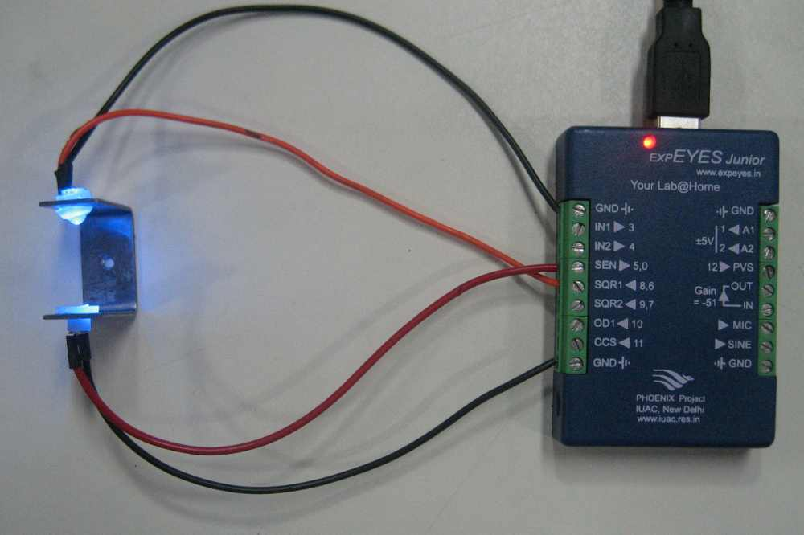

A photo-transistor plus LED combination can be used for measuring light transmission and for sensing the timing of mechanical movements. The LED is powered by SQR1. The collector of the photo-transistor is connected to SEN, which is connected to 5 volts through a 5.1k resistor. The voltage at the collector of the photo transistor changes according to the amount of light falling on it. The built-in analog comparator on SEN input is used for timing measurements when the light crosses a certain threshold.
